机器学习–逻辑回归
一、逻辑回归（Logistic Regression）算法
1. 概念
==一种分类模型，将线性回归的输出，作为逻辑回归的输入，输出的值在（0，1）范围内。==
把线性值转化为0到1的概率，然后设置阈值，实现分类任务
2. 核心思想
- 将线性回归的输出，通过一个”逻辑函数“（sigmoid）映射到（0，1）区间，从而得到概率。
- 设置阈值（比如：0.5），输出的概率值如果大于0.5，则将未知样本输出为1类，否则输出为0类。
3. 应用场景
- ==主要是二分类==任务（例如：癌症预测，风险评估等）
4. 底层原理
- 逻辑回归底层把极大似然函数 取负对数 得到交叉熵损失函数 ,然后迭代(梯度下降)寻找最小损失,也就是寻找最优参数
4.1 逻辑回归原理 – 交叉熵和似然函数的关系
- ==伯努利分布的似然函数是逻辑回归交叉熵函数的来源，对其取负对数，就直接能得到交叉熵损失。==
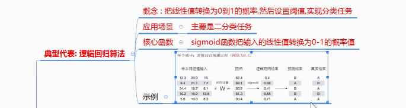
5. 常见的损失函数
- 分类：
- 二分类交叉熵损失
- 多分类交叉熵损失
- 交叉熵函数的公式：
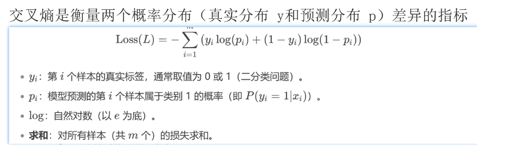
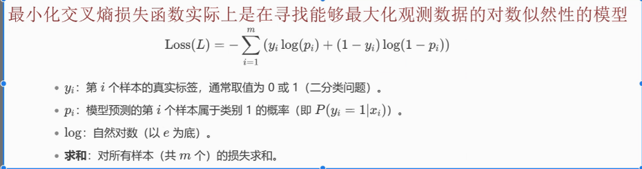
6. 分类模型的评估方法
- 作用：训练后，评估模型表现的好坏。
6.1 模型评估指标
混淆矩阵：所有评估指标的基础，==可视化TP, FP, TN, FN==。
- 基础格式：
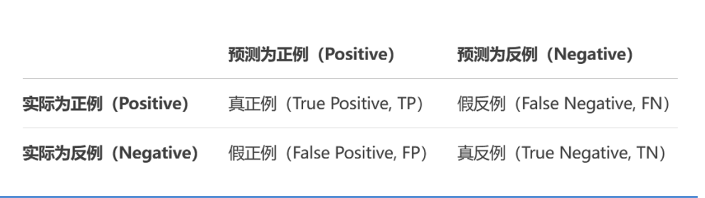
- 四个指标：
- TP（True Positive）：实际为正，预测为正（正确识别）–真正例
- FN（False Negative）：实际为正，预测为负（漏报）–假/伪反例
- FP（False Positive）：实际为负，预测为正（误报）–假/伪正例
- TN（True Negative）：实际为负，预测为负（正确拒绝）–真反例
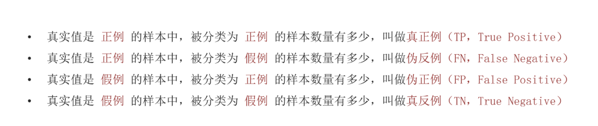
- ==模型预测和实际标签的对比矩阵==
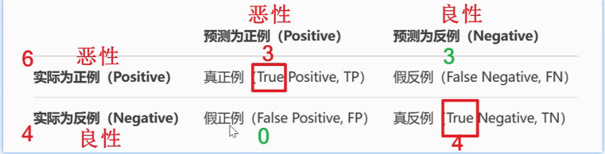
准确率(Accuracy)：最直观，但不适用于类别不平衡的数据集。
精确率(Precision)、召回率(Recall) 与 F1-Score：更全面地衡量模型性能，尤其在正负样本不均衡时。
ROC曲线与AUC值：关注模型在不同阈值下“区分正负样本”的能力。AUC值越接近1，模型性能越好。
1. 混淆矩阵（Confusion Matrix）
**分类评估的基础，显示模型预测结果与实际结果的交叉情况：
1 | ** |
四个核心概念：
- TP（True Positive）：实际为正，预测为正（正确识别）
- FN（False Negative）：实际为正，预测为负（漏报）
- FP（False Positive）：实际为负，预测为正（误报）
- TN（True Negative）：实际为负，预测为负（正确拒绝）
2. 准确率（Accuracy）
定义：正确预测的比例
1 | Accuracy = (TP + TN) / (TP + TN + FP + FN) |
特点：
- 直观易懂
- 问题：在不平衡数据集中容易误导
- 例：99%负样本，1%正样本
- 模型全预测为负，准确率=99%，但完全没识别出正样本！
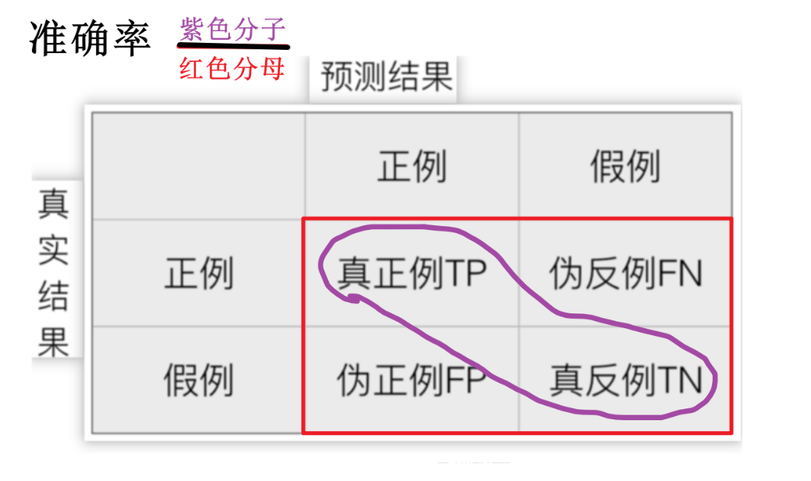
3. 精确率（Precision）和召回率（Recall）
精确率（查准率）：
预测为正的样本中，实际为正的比例
1 | Precision = TP / (TP + FP) |
关注点：减少漏报（FN）
应用场景：疾病检测（宁可误诊，也不可漏诊）
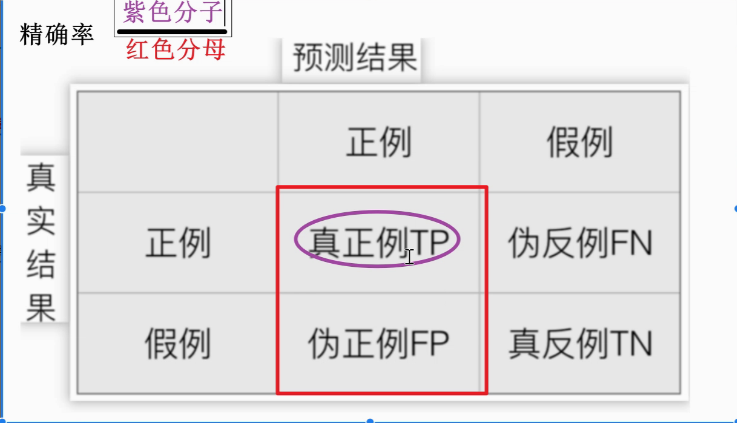
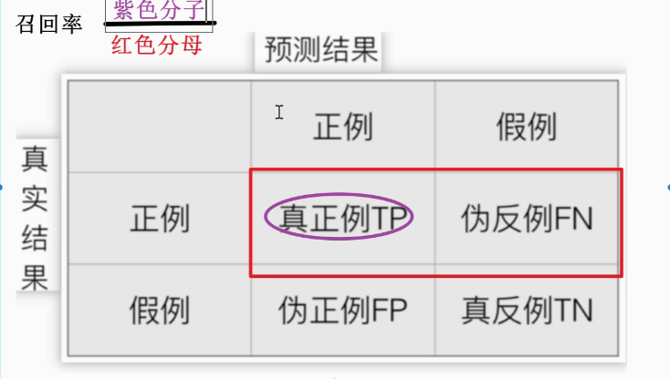
4. F1分数（F1-Score）
定义：精确率和召回率的调和平均数
1 | F1 = 2 × (Precision × Recall) / (Precision + Recall) |
- 调和平均数比算术平均数更惩罚极端值
- 适用于需要平衡精确率和召回率的场景
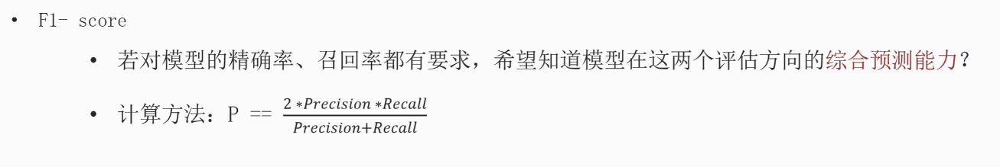
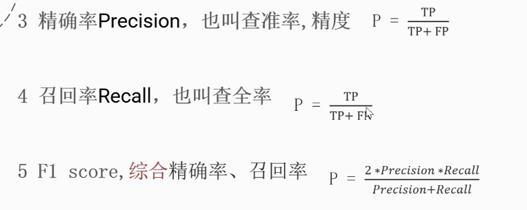
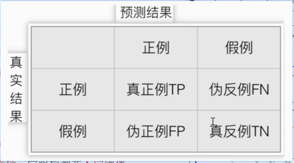
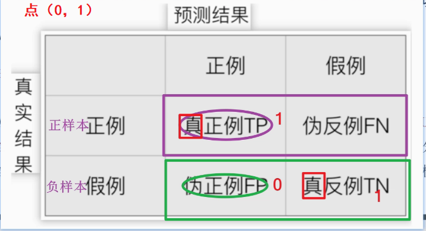
二、ROC曲线与AUC
1. 核心概念
ROC曲线（Receiver Operating Characteristic Curve）：
- 横轴：假正率（False Positive Rate, FPR）= FP / (FP + TN)
- 纵轴：真正率（True Positive Rate, TPR）= Recall = TP / (TP + FN)
绘制方法：
不断调整分类阈值（从1到0），计算每个阈值下的（FPR, TPR）点
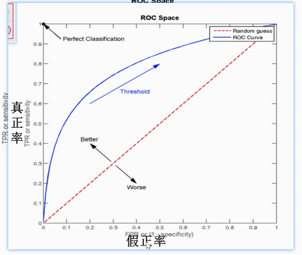
2. ROC曲线解读
1 | TPR（召回率） |
不同曲线含义：
- 对角线（y=x）：随机猜测，AUC=0.5
- 左上角曲线：模型性能好，AUC接近1
- 右下角曲线：模型性能差，AUC接近0（可反转预测）
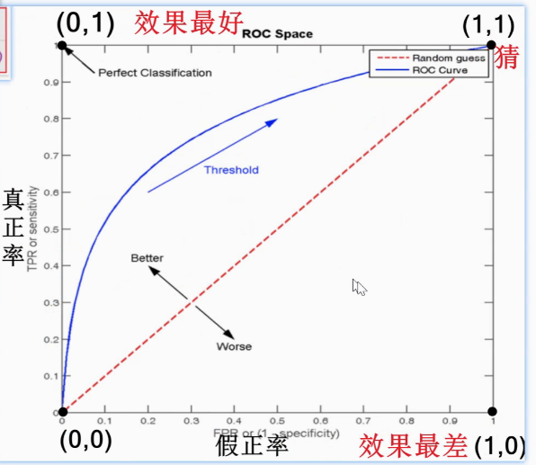
3. AUC（Area Under Curve）
- 取值范围：[0, 1]
- 物理意义：随机选取一个正样本和一个负样本，分类器将正样本排序在负样本前面的概率
- 解读：
- AUC=0.5：没有区分能力（随机）
- 0.7≤AUC<0.8：有一定区分能力
- 0.8≤AUC<0.9：区分能力较好
- AUC≥0.9：区分能力很好
4. ROC/AUC的特点
优点：
- 不受类别分布影响（与精确率/召回率不同）
- 可以比较不同模型的整体性能
- 对分类阈值的选择不敏感
缺点：
- 当类别极度不平衡时，可能过于乐观
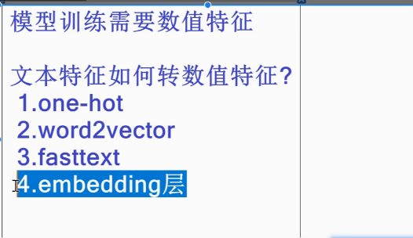
涉及的数学基础
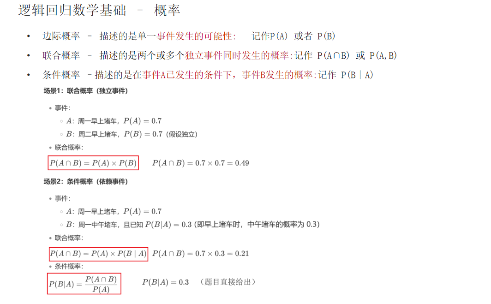
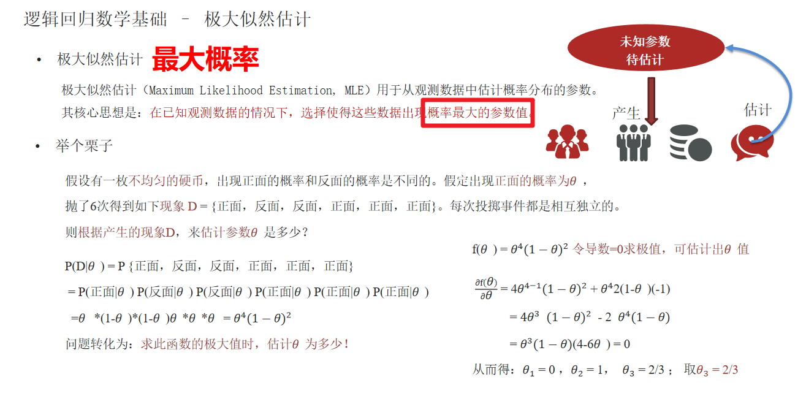
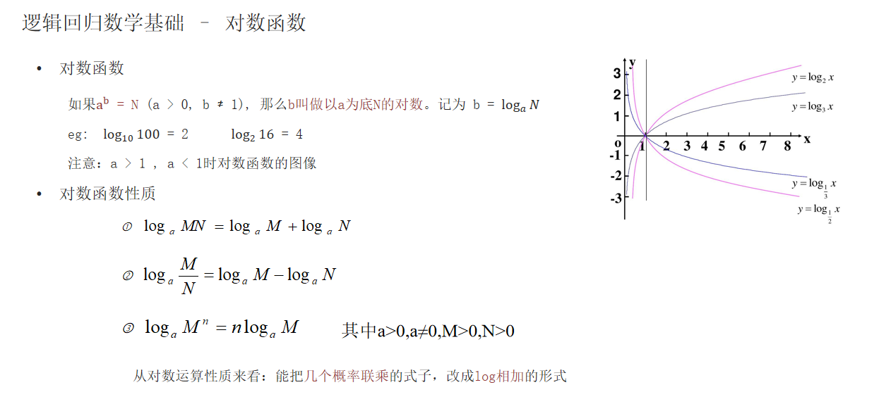
面试问题串联：
1. 简述逻辑回归的原理？
答：
逻辑回归是进行分类任务的经典算法，它的核心思想是 将线性回归的输出 作为逻辑回归的输入，通过sigmoid函数将输出的值映射到（0，1）区间，再设置一个阈值（比如：0.5）如果得出的概率大于0.5，就给他归到1类，否则归为0类；
它的一个底层原理是把极大似然函数取负对数 得到交叉熵损失 通过梯度下降得到最小损失，由于交叉熵函数是一个凸函数，所以它一定能找到最优解 ，而MSE损失函数不是凸函数，可能出现局部最优的情况。
2. 什么是逻辑回归的损失函数？
答：
逻辑回归的损失函数是对数损失函数（Log Loss），也称为交叉熵损失函数（Cross-Entropy Loss）。
逻辑回归的损失函数：有二分类交叉熵损失，和多分类交叉熵损失，一般我们执行的都是二分类任务；
关键特性
- 凸函数：这个损失==函数是凸的==，保证了梯度下降能找到==全局最优解==
- 概率解释：基于最大似然估计推导而来
- 分类特性：对错误分类进行”严厉”惩罚（损失趋于无穷大）
3. 逻辑回归的评估方法有哪些，都有什么作用？
答：
逻辑回归的评估方法：
混淆矩阵（Confusion Matrix）：直观显示四类预测结果，是计算其他指标的基础
准确率（Accuracy）：衡量整体预测正确率
精确率/查准率（Precision）：预测为正的样本中实际为正的比例 公式 ： Precision = TP / (TP + FP)
召回率/查全率（Recall）：实际为正的样本中被正确预测的比例 公式：Recall = TP / (TP + FN)
F1分数：平衡精确率和召回率 公式：F1 = 2 × (Precision × Recall) / (Precision + Recall)
ROC曲线和AUC指标：
ROC曲线：展示分类器在不同阈值下的性能
AUC指标：ROC曲线下的面积
4. 什么是ROC曲线和AUC指标？
答：
ROC曲线：展示分类器在不同阈值下的性能
- 横轴：假正率（FPR = FP/(FP+TN)）
- 纵轴：真正率（TPR = Recall）
- 作用：评估模型在不同分类阈值下的表现
AUC值：ROC曲线下的面积
- 取值范围：0.5（随机猜测）到1（完美分类）
- 优点：对类别不平衡不敏感，评估模型整体排序能力
- 适用场景：二分类模型综合评估